Some of my projects.
My work along the way, from Seoul to Pittsburgh.
↳ Click a point to open that project — labels stay hidden until then, so nothing overlaps.
This website
You're looking at it — this site is itself a project for this class, not just a place to list the others. Plain HTML, CSS, and JavaScript, no framework, built and coded with Claude (Anthropic) as an AI pair-programmer, then deployed on GitHub Pages.
Strikeout Lab
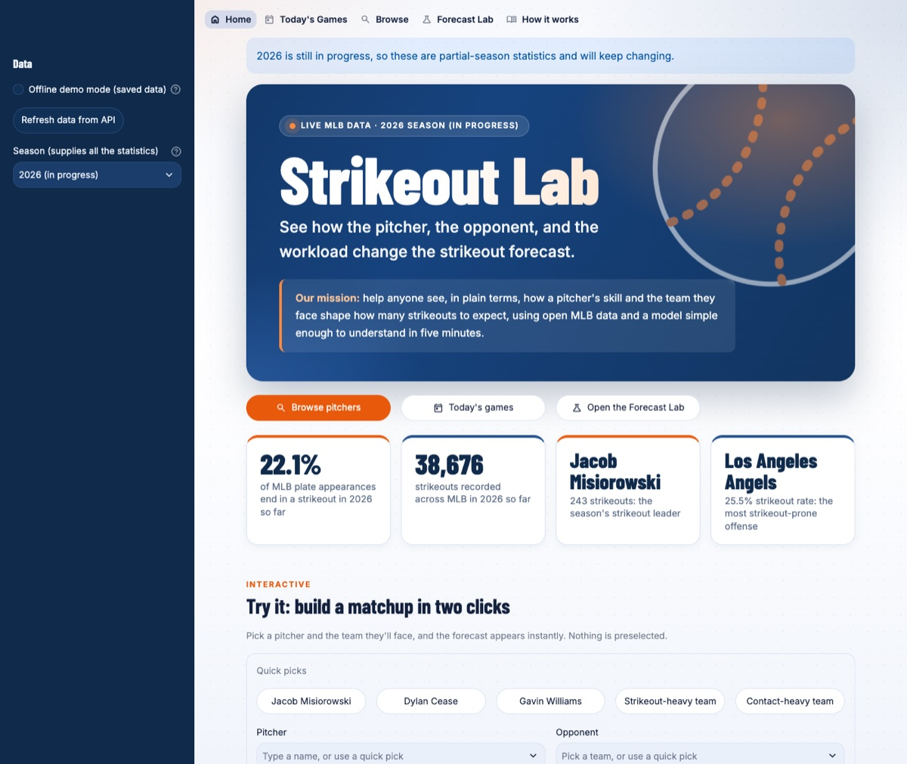
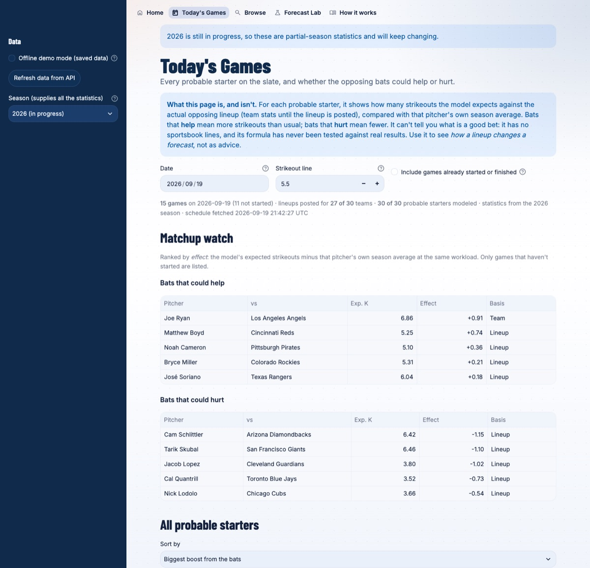
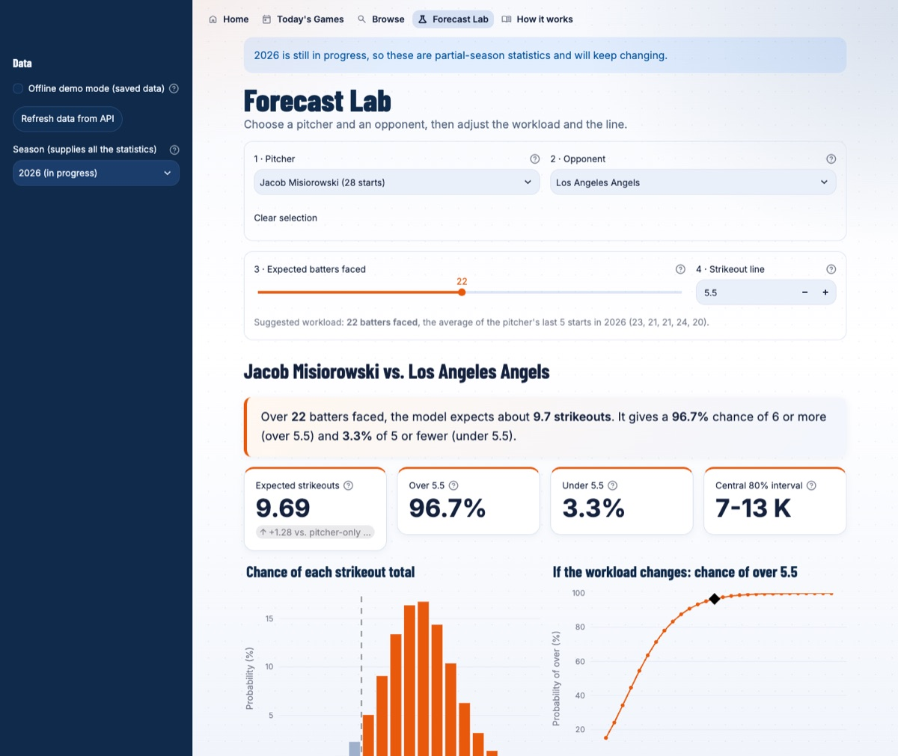
swipe for more →
An interactive Python web app that models MLB pitcher strikeouts. It pulls live team, pitcher, batter, and schedule data from the free MLB Stats API, then uses a transparent binomial model to estimate how many strikeouts to expect for a chosen pitcher, opponent, and workload, and how likely the pitcher is to go over a hypothetical line. A daily view shows which pitchers the opposing lineup could help or hurt. Made for CMU 15-113's API assignment as an educational statistics project, with the assumptions and limits spelled out in the app; it is not a betting tool. It runs locally with one command, so this page links to the code and screenshots.
PaperTrail
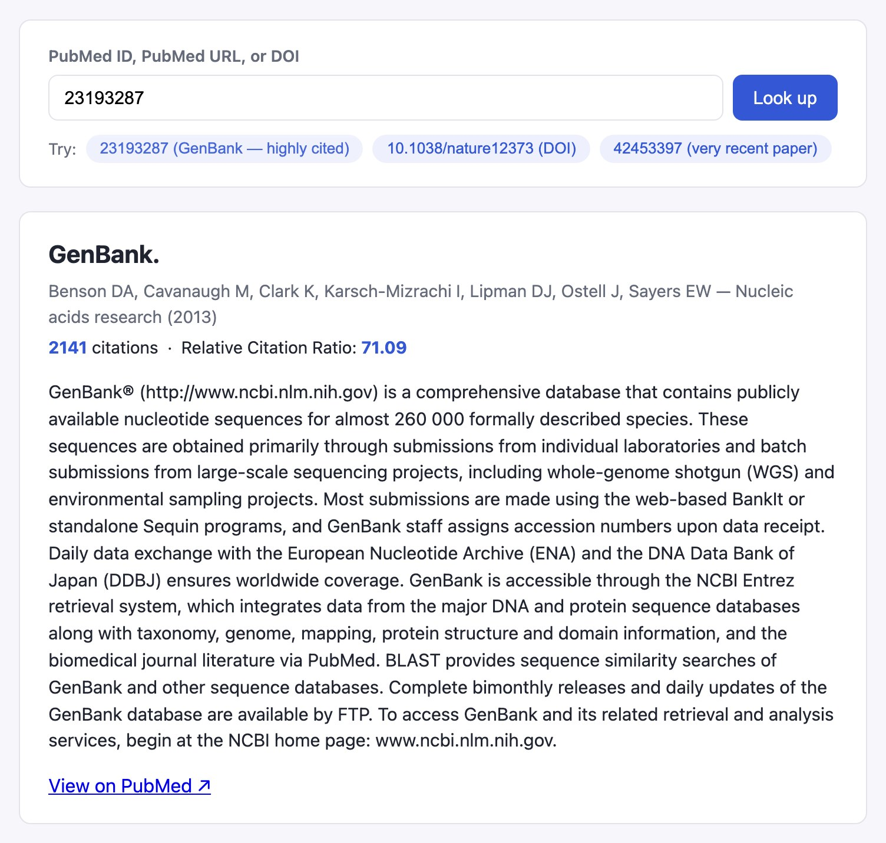
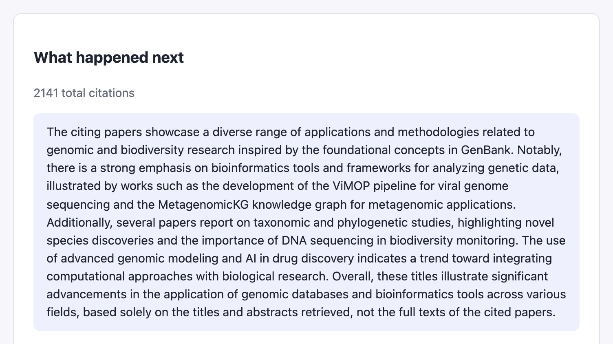
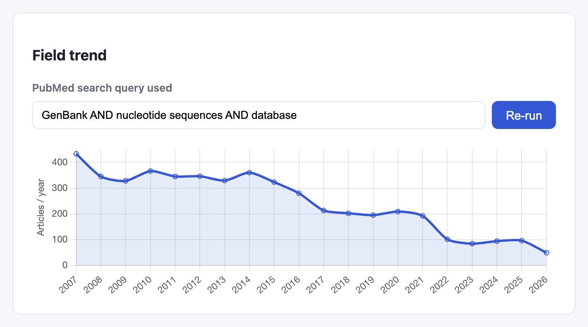
swipe for more →
A research-paper reading companion: drop in a PubMed ID, PubMed URL, or DOI and it pulls the real metadata, abstract, and citation stats from PubMed and iCite, then uses an LLM to explain the paper at three reading levels, summarize how later papers built on or challenged it (grounded only in retrieved titles/abstracts, never invented), and chart how the field's publication volume has trended over the last 20 years. Built for CMU 15-113's backend-on-Render assignment: a Flask API deployed on Render talking to a plain HTML/CSS/JS frontend on GitHub Pages, with every secret read from environment variables and nothing committed to either repo.
Eye Strain Monitor
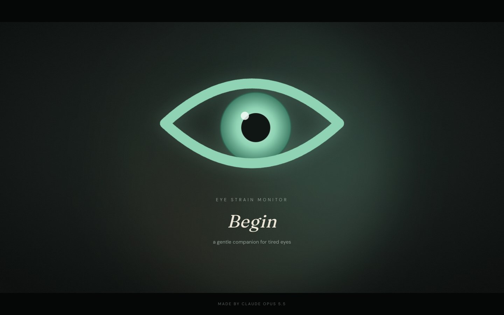
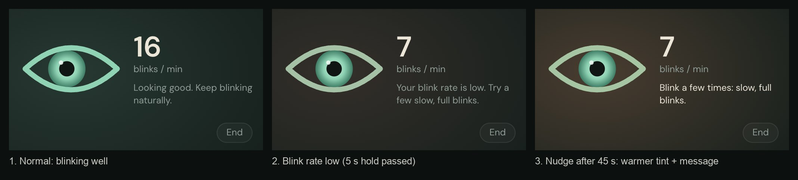
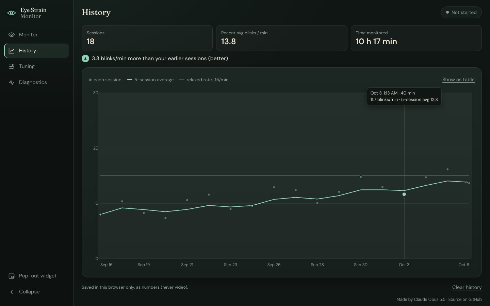
swipe for more →
A webcam-based monitor for digital eye strain that runs entirely in the browser: no video ever leaves the device. MediaPipe's face landmark model tracks the eyes, and the app turns that into blink rate, full vs. incomplete blinks, gaze, and an estimate of screen distance from the size of the iris. Detection runs in a Web Worker fed directly by the camera, so it keeps working when the window is hidden or minimized (measured at ~20 fps hidden, against 0 fps for the main-thread version). A floating always-on-top widget mirrors your eyes and nudges you to blink or lean back, sessions end with a summary, and a history page charts the trend. Installable as an app. Built for CMU 15-113's Creative Web App project; desktop-first, since it needs a webcam.
DiagKnows
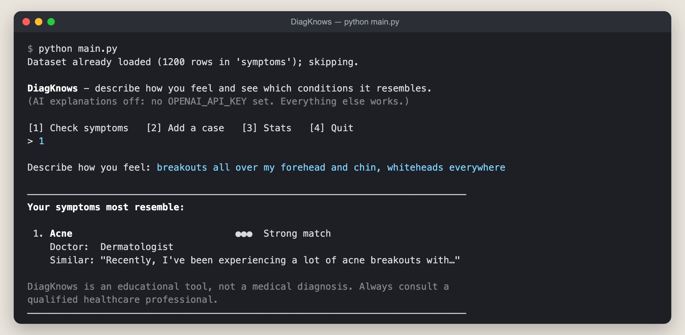
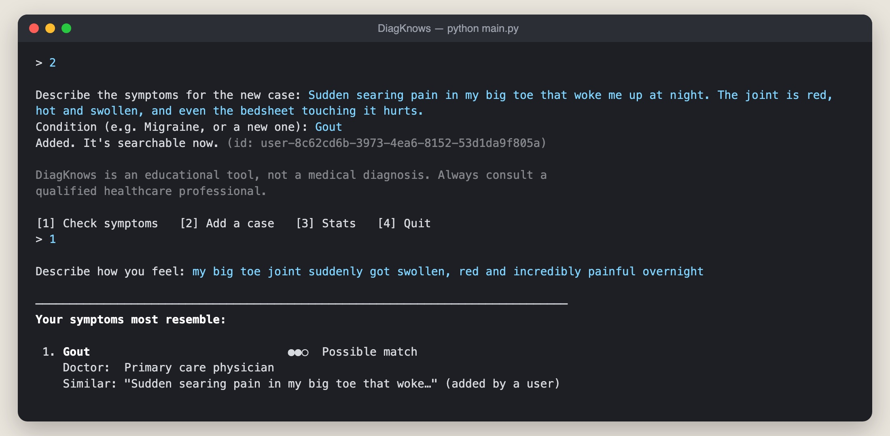
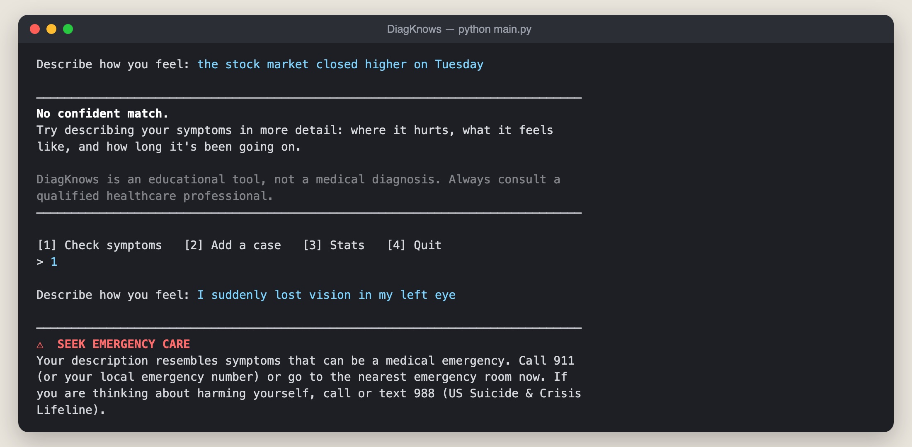
swipe for more →
A command-line symptom explorer built on a vector database. You describe how you feel in plain English, and it searches 1,200 real patient symptom descriptions (the Symptom2Disease dataset) by meaning rather than keywords. It then ranks the conditions your description most resembles, weighting each nearby case by how close it is, and suggests which kind of doctor to see. Distance cutoffs picked from real query data let it say "no confident match" instead of guessing, and a separate collection of red-flag symptoms routes emergencies to a seek-care warning. Users can add their own cases at runtime, everything persists between runs, and an optional OpenAI step explains the matches using only the retrieved text. Built for CMU 15-114's vector database assignment as an educational tool, not a diagnosis. It runs locally in the terminal, so this page links to a demo video, the code, and screenshots.